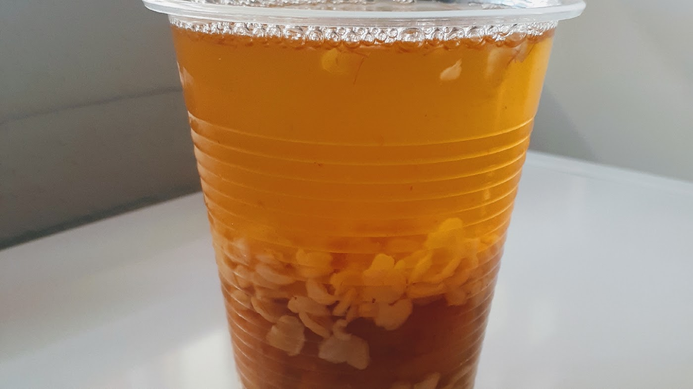
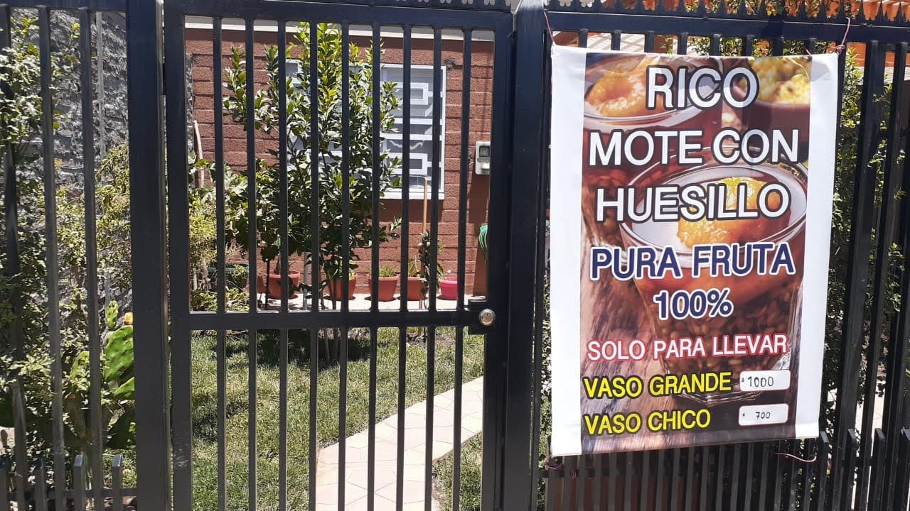
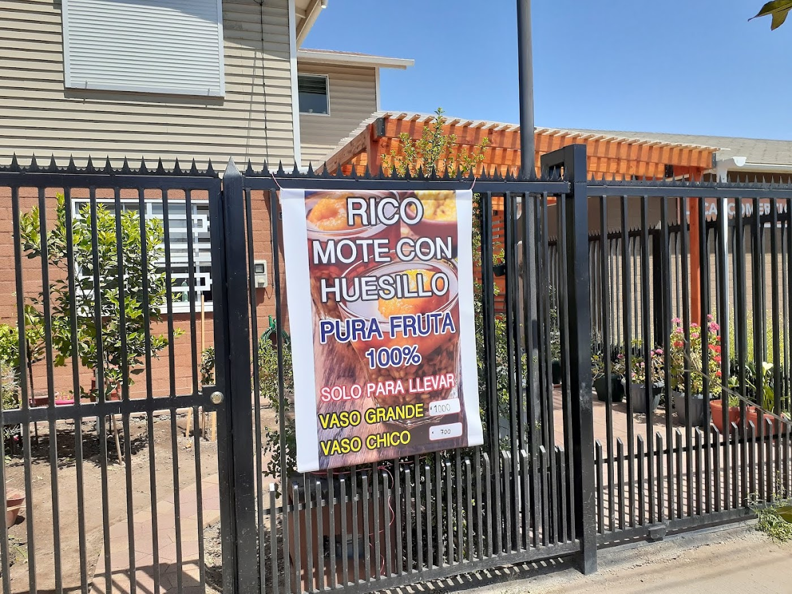

Mote con huesillo
Es lo único que hacen, y su propio cartel lo resume: "rico mote con huesillo, pura fruta 100%".

Mote con huesillo · Baquedano · San Bernardo
Mote con huesillo hecho como se hacía siempre, sin aditivos, en Baquedano 1977. Para llevar.
Es lo único que hacen, y su propio cartel lo resume: "rico mote con huesillo, pura fruta 100%".
"El mejor mote con huesillo de San Bernardo, 100% recomendado y sin aditivos" — cita textual de una reseña real.
El nombre no es un eslogan de marketing: es de lo que se trata el negocio. Otra reseña lo confirma: 100% natural, 100% recomendado.
En Baquedano 1977 hacen mote con huesillo y nada más: trigo mote, huesillos y su jugo, sin aditivos. Vaso grande o vaso chico, para llevar.
Sus reseñas son cortas y todas dicen lo mismo: "el mejor mote con huesillo de San Bernardo", "excelente, 100% natural, 100% recomendado", "muy rico, maravilloso sabor".


Los precios son los que muestra su propio cartel. Ojo: esa foto puede tener varios años, así que conviene confirmarlos en el local.
"¡El mejor mote con huesillo de San Bernardo! 100% recomendado y sin aditivos."
"Excelente mote con huesillo, 100% natural, 100% recomendado."
"¡Muy rico! Maravilloso sabor."
Baquedano 1977
San Bernardo, Región Metropolitana
—
Horario completo por confirmar con el local.